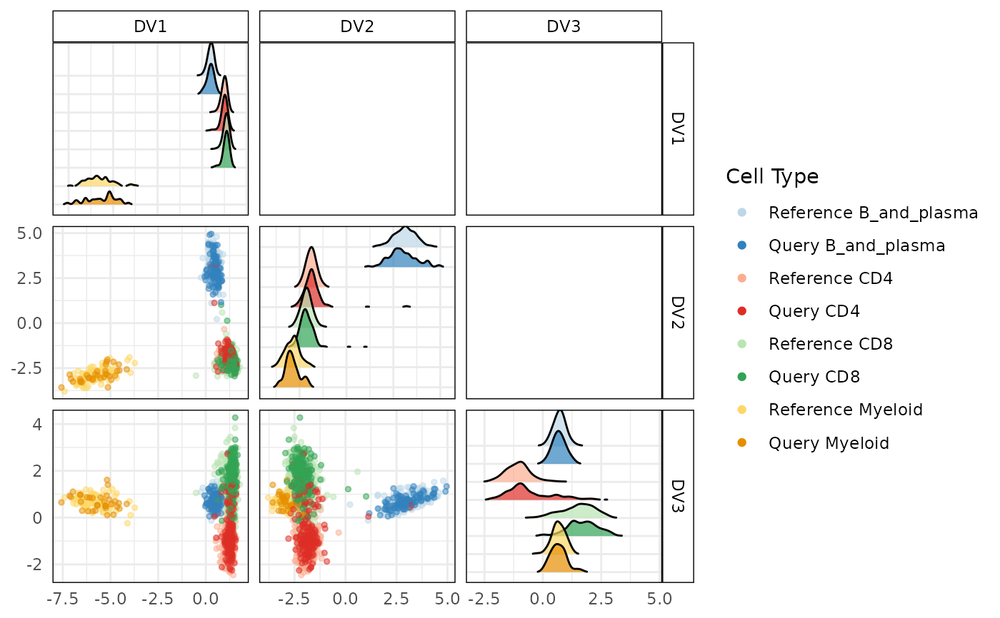
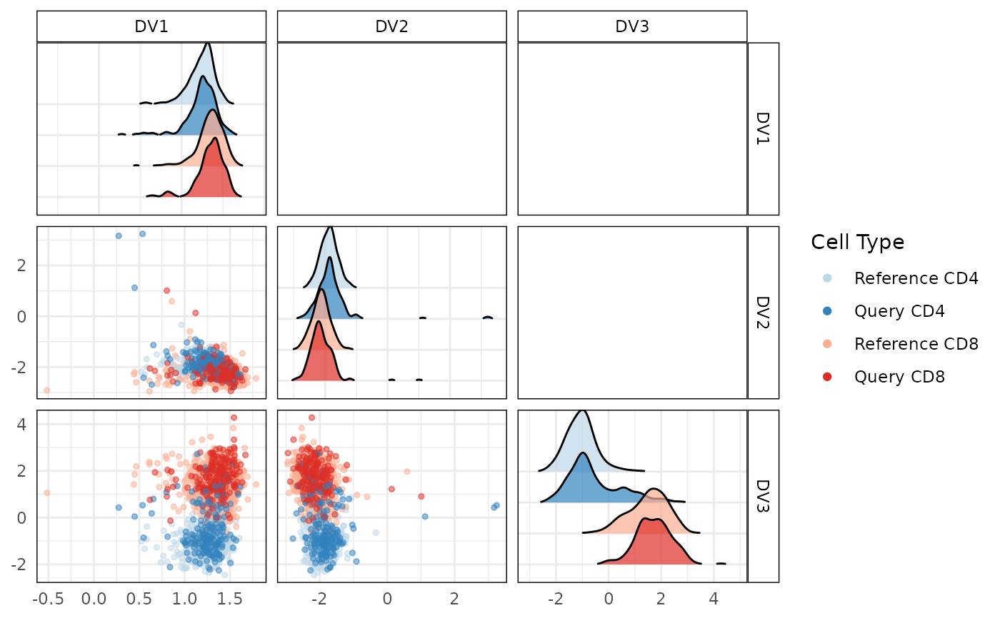

Project Query Data onto a Unified Discriminant Space of Reference Data
Source:R/calculateDiscriminantSpace.R, R/plot.calculateDiscriminantSpaceObject.R
calculateDiscriminantSpace.RdThis function projects query single-cell RNA-seq data onto a unified discriminant space defined by reference data. The reference data is used to identify important variables across all cell types and compute discriminant vectors, which are then used to project both reference and query data. Similarity between the query and reference projections can be assessed using cosine similarity and Mahalanobis distance.
The S3 plot method visualizes the projected reference and query data on the unified discriminant space.
Usage
calculateDiscriminantSpace(
reference_data,
query_data = NULL,
ref_cell_type_col,
query_cell_type_col = NULL,
cell_types = NULL,
n_tree = 500,
n_top = 20,
eigen_threshold = 0.1,
calculate_metrics = FALSE,
alpha = 0.01,
assay_name = "logcounts",
max_cells_ref = NULL,
max_cells_query = NULL
)
# S3 method for class 'calculateDiscriminantSpaceObject'
plot(
x,
cell_types = NULL,
dv_subset = NULL,
lower_facet = c("scatter", "contour", "ellipse", "blank"),
diagonal_facet = c("ridge", "density", "boxplot", "blank"),
upper_facet = c("blank", "scatter", "contour", "ellipse"),
max_cells_ref = NULL,
max_cells_query = NULL,
...
)Arguments
- reference_data
A
SingleCellExperimentobject containing numeric expression matrix for the reference cells.- query_data
A
SingleCellExperimentobject containing numeric expression matrix for the query cells. If NULL, only the projected reference data is returned. Default is NULL.- ref_cell_type_col
The column name in
reference_dataindicating cell type labels.- query_cell_type_col
The column name in
query_dataindicating cell type labels.- cell_types
A character vector specifying the cell types to plot. If NULL (default), all cell types will be plotted.
- n_tree
An integer specifying the number of trees for the random forest used in variable importance calculation.
- n_top
An integer specifying the number of top variables to select based on importance scores from each pairwise comparison.
- eigen_threshold
A numeric value specifying the threshold for retaining eigenvalues in discriminant analysis.
- calculate_metrics
Parameter to determine if cosine similarity and Mahalanobis distance metrics should be computed. Default is FALSE.
- alpha
A numeric value specifying the significance level for Mahalanobis distance cutoff.
- assay_name
Name of the assay on which to perform computations. Default is "logcounts".
- max_cells_ref
Maximum number of reference cells to include in the plot. If NULL, all available reference cells are plotted. Default is NULL.
- max_cells_query
Maximum number of query cells to include in the plot. If NULL, all available query cells are plotted. Default is NULL.
- x
An object of class
calculateDiscriminantSpaceObjectcontaining the projected data on the discriminant space.- dv_subset
A numeric vector specifying which discriminant vectors to include in the plot. Default is the number of cell types minus 1.
- lower_facet
Type of plot to use for the lower panels. Either "scatter" (default), "contour", "ellipse", or "blank".
- diagonal_facet
Type of plot to use for the diagonal panels. Either "ridge" (default), "density", "boxplot" or "blank".
- upper_facet
Type of plot to use for the upper panels. Either "blank" (default), "scatter", "contour", or "ellipse".
- ...
Additional arguments to be passed to the plotting functions.
Value
A list with the following components:
- discriminant_eigenvalues
Eigenvalues from the discriminant analysis.
- discriminant_eigenvectors
Eigenvectors from the discriminant analysis.
- ref_proj
Reference data projected onto the discriminant space.
- query_proj
Query data projected onto the discriminant space (if query_data is provided).
- query_mahalanobis_dist
Mahalanobis distances of query projections (if calculate_metrics is TRUE).
- mahalanobis_crit
Cutoff value for Mahalanobis distance significance (if calculate_metrics is TRUE).
- query_cosine_similarity
Cosine similarity scores of query projections (if calculate_metrics is TRUE).
The S3 plot method returns a GGally::ggpairs object representing
the visualization of the projected discriminant space.
Details
The function performs the following steps:
Identifies the top important variables to distinguish cell types from the reference data by taking the union of important variables from pairwise comparisons.
Computes the Ledoit-Wolf shrinkage estimate of the covariance matrix for each cell type using these important genes.
Constructs within-class and between-class scatter matrices.
Solves the generalized eigenvalue problem to obtain discriminant vectors.
Projects both reference and query data onto the unified discriminant space.
Assesses similarity of the query data projection to the reference data using cosine similarity and Mahalanobis distance.
The S3 plot method generates a pairs plot visualization of discriminant vectors, similar to PCA plot visualization. Each panel shows the relationship between two discriminant vectors with customizable display options for lower, diagonal, and upper panels. The visualization allows for comprehensive examination of the discriminant space structure and cell type separability.
References
Fisher, R. A. (1936). "The Use of Multiple Measurements in Taxonomic Problems". *Annals of Eugenics*. 7 (2): 179–188. doi:10.1111/j.1469-1809.1936.tb02137.x.
Hastie, T., Tibshirani, R., & Friedman, J. (2009). *The Elements of Statistical Learning: Data Mining, Inference, and Prediction*. Springer. Chapter 4: Linear Methods for Classification.
Ledoit, O., & Wolf, M. (2004). "A well-conditioned estimator for large-dimensional covariance matrices". *Journal of Multivariate Analysis*. 88 (2): 365–411. doi:10.1016/S0047-259X(03)00096-4.
De Maesschalck, R., Jouan-Rimbaud, D., & Massart, D. L. (2000). "The Mahalanobis distance". *Chemometrics and Intelligent Laboratory Systems*. 50 (1): 1–18. doi:10.1016/S0169-7439(99)00047-7.
Breiman, L. (2001). "Random Forests". *Machine Learning*. 45 (1): 5–32. doi:10.1023/A:1010933404324.
Author
Anthony Christidis, anthony-alexander_christidis@hms.harvard.edu
Examples
# Load data
data("reference_data")
data("query_data")
# Compute discriminant space using unified model across all cell types
disc_output <- calculateDiscriminantSpace(reference_data = reference_data,
query_data = query_data,
query_cell_type_col = "SingleR_annotation",
ref_cell_type_col = "expert_annotation",
n_tree = 500,
n_top = 50,
eigen_threshold = 1e-1,
calculate_metrics = FALSE,
alpha = 0.01)
# Generate scatter and boxplot
plot(disc_output, plot_type = "scatterplot")
#> Picking joint bandwidth of 0.111
#> Picking joint bandwidth of 0.128
#> Picking joint bandwidth of 0.151

plot(disc_output, cell_types = c("CD4", "CD8"), plot_type = "boxplot")
#> Picking joint bandwidth of 0.038
#> Picking joint bandwidth of 0.0825
#> Picking joint bandwidth of 0.203

# Check comparison
table(Expert_Annotation = query_data$expert_annotation,
SingleR = query_data$SingleR_annotation)
#> SingleR
#> Expert_Annotation B_and_plasma CD4 CD8 Myeloid
#> B_and_plasma 98 3 1 0
#> CD4 0 133 5 0
#> CD8 0 44 186 0
#> Myeloid 0 0 0 33